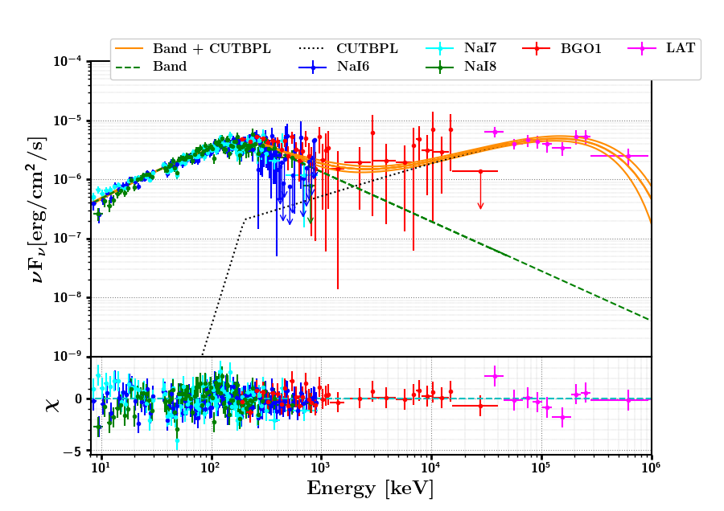
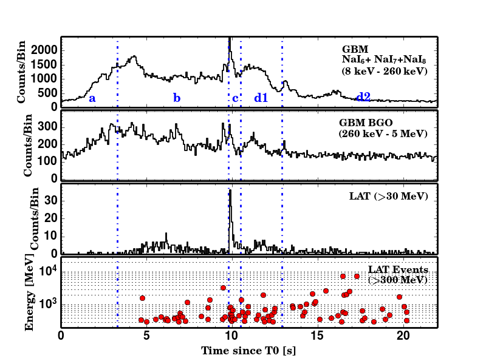
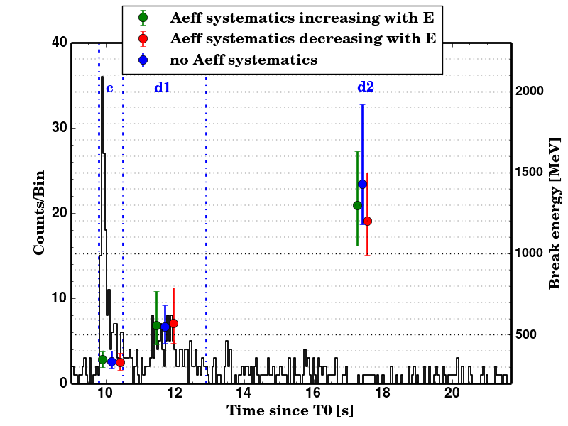

2017
M. Yassine, F. Piron, R. Mochkovitch and F. Daigne — Time evolution of the spectral break in the high-energy extra component of GRB 090926A
A&A, 606, A93 (2017) · First-author publication
A time-resolved joint Fermi/GBM–LAT analysis revealing a persistent high-energy attenuation evolving toward the GeV domain, and using this feature to probe the dynamics of the relativistic outflow.

During my PhD, I performed a detailed time-resolved analysis of GRB 090926A using joint observations from the Fermi Gamma-ray Burst Monitor (GBM) and Large Area Telescope (LAT). The analysis used the LAT Pass 8 data set, whose improved sensitivity at low LAT energies made it possible to characterize the broadband spectrum more precisely, particularly between 30 and 100 MeV.
GRB 090926A is especially interesting because a short and bright pulse around 10 seconds after the trigger is accompanied by the appearance of an additional high-energy spectral component. This component shows a strong attenuation at its highest energies.
The analysis confirmed the previously reported spectral break during the bright pulse and showed, for the first time, that the attenuation persists during the later prompt emission. Its characteristic energy increases with time, moving from hundreds of MeV toward the GeV range.
This temporal evolution provided a direct way to test physical interpretations of the high-energy emission. In the scenario where the break results from gamma-ray opacity to electron–positron pair production, the measurements constrain the bulk Lorentz factor of the relativistic outflow.
The spectral study was complemented by a detailed temporal analysis of the GBM and LAT light curves. Variability timescales measured around the bright pulse were combined with the spectral constraints to connect the observed high-energy behaviour with the physical conditions and location of the emitting region.


A&A, 606, A93 (2017) · First-author publication